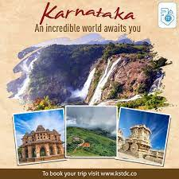

Andaman and Nicobar Islands
Andhra-Pradesh
Arunachal-Pradesh
Assam
Bihar

Chandigarh
Chattisgarh
Dadra Nagar Haveli

Delhi

Goa
Gujarath
Haryana
Himachal-Pradesh
Jammu and Kashmir
Jharkhand

Karnataka

Kerala
Ladhak

Lakshadweep

Madhya Pradesh

Maharastra
Manipur

Meghalaya
Mizoram
Nagaland
Odisha
Puducherry
Punjab

Rajasthan
Sikkim
Tamil Nadu

Telangana
Tripura
Uttarkhand
Uttarpradesh
WestBengal